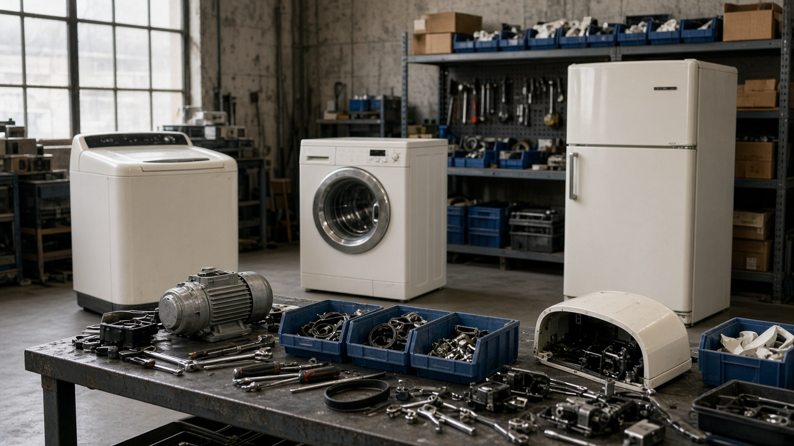
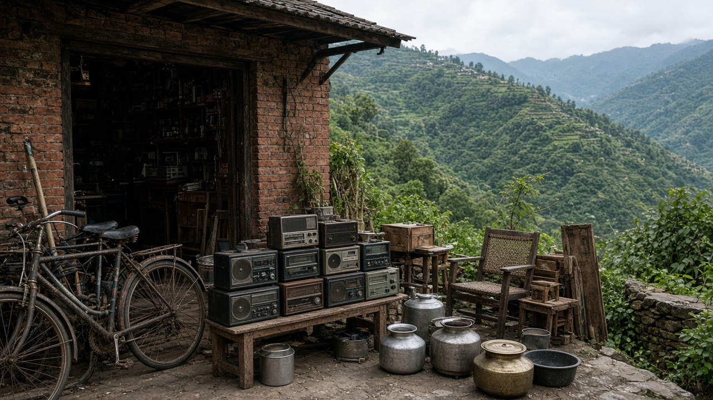

Circular Economy Principles and Models
Published on August 19, 2026
The circular economy is an economic model designed to eliminate waste and keep products, components, and materials in use for as long as possible. Instead of the linear take-make-dispose pattern, it emphasizes designing durable goods, repairing items, reusing parts, and recycling resources back into production. This approach reduces pressure on raw material extraction, lowers energy demand, and cuts pollution across supply chains. Circular principles align economic growth with environmental protection rather than treating them as opposing goals.
Key models include product-as-a-service, where customers lease equipment rather than owning disposable versions; industrial symbiosis, where one company's waste feeds another's process; and remanufacturing, which restores used products to like-new condition. Digital tracking, material passports, and reverse logistics help recover valuable items after consumer use. Governments support circular transitions through extended producer responsibility, green public procurement, and incentives for eco-design. Businesses that adopt circular strategies often gain cost savings, brand trust, and resilience against resource price shocks.
Building a circular economy requires collaboration among designers, manufacturers, retailers, consumers, and waste managers. Education and labeling help people choose repairable, recyclable products and return end-of-life goods through proper channels. Cities can expand repair cafés, sharing libraries, and deposit-return systems to keep materials circulating locally. While not every product can be fully circular today, steady progress toward closed-loop systems moves society away from wasteful consumption toward sustainable prosperity that respects planetary limits.

चक्रिय अर्थतन्त्र फोहोर हटाउने र उत्पादन, भाग र सामग्रीलाई सक्दो लामो समयसम्म प्रयोगमा राख्ने आर्थिक मोडेल हो। रेखीय लिने-बनाउने-फाल्ने ढाँचाको विपरीत, यसले टिकाउ सामान डिजाइन गर्ने, वस्तु मर्मत गर्ने, भाग पुन: प्रयोग गर्ने र स्रोत उत्पादनमा फर्काउनेमा जोड दिन्छ। यसले कच्चा स्रोत निकाल्ने दबाब, ऊर्जा माग र आपूर्ति श्रृंखलामा प्रदूषण घटाउँछ। चक्रिय सिद्धान्तले आर्थिक वृद्धि र वातावरणीय संरक्षणलाई विपरीत लक्ष्य होइन, एकरूप लक्ष्यका रूपमा मिलाउँछ।
मुख्य मोडेलहरूमा सेवाको रूपमा उत्पादन, जहाँ उपभोक्ताले एक पटक प्रयोग हुने सामानको सट्टा उपकरण भाडामा लिन्छन्; औद्योगिक सहजीवन, जहाँ एक कम्पनीको फोहोर अर्कोको प्रक्रियामा खाना हुन्छ; र पुन: उत्पादन, जसले प्रयोग गरिएको उत्पादनलाई नयाँ जस्तै अवस्थामा ल्याउँछ। डिजिटल ट्र्याकिङ, सामग्री राहदानी र उल्टो लजिस्टिक्सले उपभोक्ता प्रयोग पछिको मूल्यवान वस्तु पुन: प्राप्त गर्न मदत गर्छ। सरकारले विस्तारित उत्पादक जिम्मेवारी, हरियो सार्वजनिक खरिद र इको-डिजाइन प्रोत्साहनबाट चक्रिय संक्रमणलाई समर्थन गर्छ। चक्रिय रणनीति अपनाउने व्यवसायहरूले प्रायः खर्च बचत, ब्रान्ड विश्वास र स्रोत मूल्यको झट्कामा लचिलोपन पाउँछन्।
चक्रिय अर्थतन्त्र निर्माण गर्न डिजाइनर, उत्पादक, खुद्रा विक्रेता, उपभोक्ता र फोहोर व्यवस्थापक बीच सहयोग चाहिन्छ। शिक्षा र लेबलिङले मानिसलाई मर्मत योग्य, पुन: चक्रण योग्य उत्पादन छान्न र अन्तिम अवस्थाका सामग्री सही च्यानलबाट फिर्ता गर्न मदत गर्छ। सहरले मर्मत क्याफे, साझा पुस्तकालय र जमानत-फिर्ता प्रणाली विस्तार गरी सामग्री स्थानीय स्तरमा परिचालनमा राख्न सक्छ। आज सबै उत्पादन पूर्ण चक्रिय हुन सक्दैन, तर बन्द लूप प्रणालीतर्फ स्थिर प्रगतिले समाजलाई फोहोरयुक्त उपभोगबाट ग्रहको सीमा सम्मान गर्ने स्थायी समृद्धितर्फ लैजान्छ।

चक्रीय अर्थव्यवस्था अपशिष्ट को समाप्त करने और उत्पादों, घटकों और सामग्रियों को यथासंभव लंबे समय तक उपयोग में रखने के लिए बनाया गया आर्थिक मॉडल है। रैखिक लेने-बनाने-फेंकने के बजाय, यह टिकाऊ सामान डिज़ाइन करने, वस्तु की मरम्मत, हिस्सों का पुन: उपयोग और संसाधनों को उत्पादन में वापस लाने पर जोर देता है। यह कच्चे संसाधन निकालने का दबाव, ऊर्जा की मांग और आपूर्ति श्रृंखला में प्रदूषण कम करता है। चक्रीय सिद्धांत आर्थिक वृद्धि और पर्यावरण संरक्षण को विपरीत लक्ष्य नहीं, एकरूप लक्ष्य के रूप में मिलाते हैं।
मुख्य मॉडलों में सेवा के रूप में उत्पादन, जहाँ ग्राहक एक बार उपयोग वाले सामान के बजाय उपकरण किराए पर लेते हैं; औद्योगिक सहजीवन, जहाँ एक कंपनी का अपशिष्ट दूसरे की प्रक्रिया में कच्चा माल बनता है; और पुन: उत्पादन, जो प्रयुक्त उत्पादों को नए जैसी स्थिति में लाता है। डिजिटल ट्रैकिंग, सामग्री पासपोर्ट और उल्टा लॉजिस्टिक्स उपभोक्ता उपयोग के बाद मूल्यवान वस्तु पुन: प्राप्त करने में मदद करते हैं। सरकार विस्तृत उत्पादक जिम्मेदारी, हरित सार्वजनिक खरीद और इको-डिज़ाइन प्रोत्साहन से चक्रीय संरचना का समर्थन करती है। चक्रीय रणनीति अपनाने वाले व्यवसाय अक्सर खर्च बचत, ब्रांड विश्वास और संसाधन मूल्य के झटके में लचीलापन पाते हैं।
चक्रीय अर्थव्यवस्था बनाने के लिए डिज़ाइनर, उत्पादक, खुदरा विक्रेता, उपभोक्ता और अपशिष्ट प्रबंधकों के बीच सहयोग चाहिए। शिक्षा और लेबलिंग लोगों को मरम्मत योग्य, पुन: चक्रण योग्य उत्पाद चुनने और अंतिम अवस्था वाली वस्तु सही चैनल से वापस करने में मदद करती है। शहर मरम्मत कैफे, साझा पुस्तकालय और जमानत-वापसी प्रणाली बढ़ाकर सामग्री स्थानीय स्तर पर परिचालन में रख सकते हैं। आज हर उत्पाद पूर्ण चक्रीय नहीं हो सकता, लेकिन बंद लूप प्रणाली की ओर स्थिर प्रगति समाज को अपशिष्टयुक्त उपभोग से ग्रह की सीमाओं का सम्मान करने वाली स्थायी समृद्धि की ओर ले जाती है।